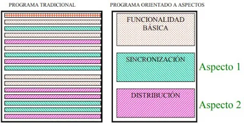
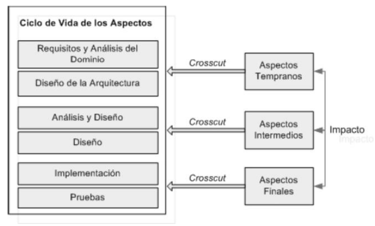

Filosofía del Paradigma.
Generalidades
Debemos comenzar con el hecho de que existe un gran debate en cuanto a si la programación orientada a aspectos es o no un paradigma. Muchas personas afirman que es solamente una extensión de la programación orientada a objetos. Por contraparte, existen las personas que definen la programación orientada a aspectos como un paradigma nuevo, que, aunque es compatible con POO, y por ende soporta la clasificación por objetos, no necesariamente debe hacerlo. Es decir, idealmente POA es aplicable a otros paradigmas como podría ser la descomposición funcional. En nuestro caso, decidimos tomar la programación orientada a aspectos como un paradigma.
Otro aspecto a considerar es que la Programación Orientada a Aspectos basa su filosofiía en tratar las obligaciones transversales de nuestros programas como módulos separados. Por obligación transversal nos referimos a aquella que se repite en varias partes de un programa, independientemente de si las secciones en las que aparece tienen relación directa.

Objetivo Principal
La programación orientada a aspectos tiene como objetivo principal: "brindar un contexto al programador que permita separar claramente componentes y aspectos, separando componentes entre sí, aspectos entre sí, y aspectos de componentes, a través de mecanismos que hagan posible abstraerlos y componerlos para producir el sistema completo."

Objetivos Específicos
Dentro de los objetivos específicos se tienen los siguientes:
- Tener un código menos enmarañado, más natural y más reducido.
- Una mayor facilidad para razonar sobre las materias, ya que están separadas y tienen una dependencia mínima.
- Tener más facilidad para depurar y hacer modificaciones en el código.
- Conseguir que un conjunto grande de modificaciones en la definición de una materia tenga un impacto mínimo en las otras.
- Tener un código más reusable y que se puede acoplar y desacoplar cuando sea necesario.
- Separar adecuadamente las responsabilidades de los módulos de software.
Las "6 C's" de Mehmet Aksit
Las 6 "C's" son un conjunto de conceptos propuestos por Mehmet Aksit y son las bases a la hora de generar software con programación orientada a aspectos. A continuación se da una primera aproximación a lo que son los conceptos base de la misma:
- Entrecruzado (Crosscutting): El entrecruzado se basa en encapsular los conceptos transversales que existen en el código tradicional, para luego entrecruzarlo con la funcionalidad principal que por ende también queda encapsulada. Éste entrecruzado hace que ambos, funcionalidad y aspectos queden totalmente funcionales sin necesidad de repetición de código.

- Canónico: Los conceptos transversales deben ser implementados de manera estable y completa, totalmente independientes entre ellos.
- Composición: La implementación del modelo debe proveer factores de calidad, como adaptabilidad, reusabilidad y extensibilidad.
- Clausura: La implementación debe mantener la totalidad de los factores de calidad del diseño en la etapa de implementación, para evitar problemas con los conceptos de funcionalidad y configuración.
- Computabilidad: El software generado por la implementación orientada a aspectos debe ser funcional y ejecutable.
- Certificabilidad: Los modelos de diseño e implementación deben ser evaluables en cada parte del proceso de desarrollo e implementación, además de ser controlable para aumentar o mantener la calidad del modelo.
Las "4 S's" de Harold Ossher:
Las 4 S's se refieren a separación exitosa de conceptos por Harold Ossher y son las siguientes:
- Simultáneo: Los conceptos y composiciones importantes deben poder coexistir dentro del modelo completo sin interrumpirse.
- Auto-contenido (Self-contained): Cada módulo debe declarar sus dependencias, con el objetivo de poder entender cada módulo por separado.
- Simétrico: Todos los conceptos deben ser encapsulados de la misma manera en cada módulo diferente, todo esto con el fin de obtener una mayor confiabilidad en la composición.
- Espontáneo (Spontaneous): Al agregar nuevos conceptos, la encapsulación, integración e identificación debe ser sencilla, incluyendo los conceptos que surjan en la etapa de implementación.
Separación de conceptos (SoC)
La separación de conceptos, o separación de intereses, es un principio de diseño para separar un programa informático en secciones distintas, tal que cada sección enfoque un interés delimitado. Un interés o una preocupación es un conjunto de información que afecta al código de un programa. Una preocupación puede ser algo tan general como los detalles del hardware para el que se va a optimizar el código, o tan concreto como el nombre de una clase que se pretende instanciar. Un programa que utiliza una buena separación de intereses es un programa modular.
La modularidad, y por tanto la separación de intereses, se consigue a través de la encapsulación de información en una sección de código que tiene una interfaz bien definida. La encapsulación es una manera de ocultar información que consigue que cada capa no conozca el estado de las demás. Otro ejemplo de separación de intereses es la división de un sistema de información en capas (p. ej., capa de presentación, capa de lógica de negocio, capa de acceso a datos, capa de persistencia).
El valor de la separación de intereses es simplificar el desarrollo y mantenimiento de programas informáticos. Cuando los intereses están bien separados, se pueden reutilizar, desarrollar y actualizar las distintas secciones individuales de forma independiente. La posibilidad de modificar una parte del código del programa sin tener que revisar y modificar las demás es de gran valor en el mantenimiento de software.
Separación multidimensional de conceptos (MDSoC)
La separación multidimensional de conceptos es una aproximación al problema de la separación de conceptos utilizando una estructura llamada el hiperespacio, desarrollada por Harold Ossher y Peri Tarr en los laboratorios de investigación IBM Thomas Watson publicado en 1998.
Esta aproximación es utilizada en el desarrollo de lenguajes de programación orientados a aspectos como HyperJ.
El documento inicia con un breve ejemplo de la derivación de los paradigmas de programación, indicando el nacimiento de la separación de conceptos y cuales de los paradigmas derivan de ella:

Los hiperespacios permiten la identificación explícita de cualquier concepto de importancia, la encapsulación de estos conceptos, identificación y administración de las relaciones que tengan cada uno de estos conceptos y su integración. Muchas de las decisiones que se toman al definir los hiperespacios son tomadas para lograr un impacto limitado en el cambio y lograr una evolución simplificada.
Un espacio de concepto concentra todas las unidades, es decir todos los constructores sintácticos del lenguaje, en un cuerpo de software, como una librería. Organiza las unidades en ese cuerpo de software para separar todos los conceptos importantes, describe las interrelaciones entre los conceptos e indica cómo los componentes del software y el resto del sistema pueden construirse a partir de las unidades que especifican los conceptos.
Los hiperespacios son un espacio de concepto especialmente estructurado para soportar la aproximación a la separación multidimensional de conceptos. Su primera característica distintiva es que sus unidades están organizadas en una matriz multidimensional, donde cada eje representa una dimensión de concepto, y cada punto en ese eje es un concepto en esa dimensión. Esto hace explicitas a todas las dimensiones de interés, los conceptos que pertenecen a cada dimensión y qué conceptos son afectados por qué unidades.
Representación de las preocupaciones
Las preocupaciones representan comportamientos transversales en un sistema que deben ser independientes entre ellas mismas y también a los comportamientos centrales. Es posible representarlas mediante un sistema cartesiano multidimensional, en donde cada dimensión representa una preocupación independiente. A continuación, un ejemplo de un sistema con dos preocupaciones, persistencia y auditoría, junto a todos los comportamientos centrales que están representados por la dimensión llamada lógica de negocio:

Cada dimensión o preocupación es mutuamente independiente y puede evolucionar sin afectar a ninguna otra.
POA y POO
A primera vista daría la impresión que la POA y la POO son en realidad el mismo paradigma. Sin embargo, esta primera impresión es errónea. Un análisis más profundo revela las diferencias entre los paradigmas:
Tanto la POA como la POO crean implementaciones modularizadas y con mínimo acoplamiento. La diferencia radica en que mientras la POA se enfoca en los conceptos que se entrecruzan, la POO se enfoca en los conceptos comunes y los ubica en un árbol de herencia.

En POA la implementación de los conceptos son independientes. Esta independencia la distingue de las técnicas inherentes a la POO. En POA, el flujo de composición va desde los conceptos que se entrecruzan al concepto principal; mientras que en la POO el flujo va en dirección opuesta.
Otra de las impresiones erróneas que puede tener quien lee por primera vez sobre aspectos es considerar que la POA está limitada a utilizar como base a la POO. Entonces es primordial aclarar que una implementación POA puede utilizar como metodología base cualquier paradigma de programación, manteniendo intactos los beneficios de ese paradigma de programación. Se elige POO como el sistema base para obtener los beneficios de una mejor implementación de los conceptos comunes. Bajo esta implementación los conceptos individuales pueden emplear técnicas orientadas a objetos. Esto es análogo a la forma en que actúan los lenguajes procedurales como lenguaje base a muchos lenguajes orientados a objetos.
¿Es la POA un paradigma?
Por la simplicidad de la POA, se puede llegar a pensar que no es un paradigma, si no más bien, un complemento de otros paradigmas más completos, como por ejemplo, POO. Para saber si lo es o no recurriremos a la mera definición de paradigma:
Como paradigma denominamos todo aquel modelo, patrón o ejemplo que debe seguirse en determinada situación. Por lo tanto, podemos decir, que un paradigma de programación es un modelo para desarrollar software.
Teniendo en cuenta esto, a su criterio propio ¿Es o no la POA un paradigma de programación?
"Diagramas UML" en la programación orientada a aspectos.
Los Diagramas UML son una herramienta muy buena para visualizar los modelos de programación orientada a objetos, como ya se ha hablado anteriormente este paradigma va muy de la mano con los aspectos, ¿Como sería una aproximación de los aspectos en este tipo de diagramas?
Para mostrar esto, veamos un pequeño ejemplo: Tenemos el modelo de una aplicación de interfaz gráfica donde podemos encontrar dos clases Rect y Circle, donde ambas heredan de una clase padre Figure , las clases hijas definen los métodos de Rotar, Trasladar y Escalar .

Esta aplicación gráfica requiere de actualizar la interfaz gráfica al momento de ejecutar los correspondientes métodos que modifican las figuras, esto se puede implementar con un aspecto que se ejecute junto con cada uno de los métodos, por lo que podemos asumir que el aspecto estará unido a los ya mencionados métodos. Por lo tanto una posible visualización de los aspectos en el diagrama de clases es la siguiente.

Características generales del desarrollo de software orientado a aspectos
Los aspectos se clasifican de la siguiente forma: (1) aspectos tempranos, los cuales se especifican desde los requisitos hasta la arquitectura; (2) aspectos intermedios, los cuales se especifican en estructuras aspectuales al nivel del diseño; (3) aspectos finales, los cuales se especifican en lenguajes de programación especializados como el AspectJ.

- Aspectos Tempranos Generalmente, los aspectos tempranos se basan en tres principios:
- Identificar, separar y componer intereses transversales.
- Soportar la negociación de conflictos (trade off) causados por la identificación de intereses transversales, requisitos que se sobreponen unos con otros, o simplemente que están mal identificados o especificados.
- Negociar y tomar decisiones entre grupos de participantes (stakeholders).
- Aspectos Intermedios El Desarrollo de Software Orientado a Aspectos, inicialmente toma fuerza debido a la necesidad de expresar en un lenguaje de diseño, como UML, los elementos o estructura que ya era posible lograr al nivel de la implementación en AspectJ (u otros lenguajes orientados por aspectos).
- Aspectos Finales Los Aspectos existen tanto en la etapa de diseño como en la de implementación. Un Aspecto de diseño es una unidad modular del diseño que se entremezcla en la estructura de otras partes del diseño. Un Aspecto de programa o de código es una unidad modular del programa que aparece en otras unidades modulares del programa”. En otras palabras, un aspecto es una propiedad de un programa que no puede ser claramente encapsulada en un procedimiento generalizado (tal como un objeto, método, procedimiento o API). En esta etapa es donde se realiza la implementación de los aspectos a nivel de código. En la actualidad existen varios lenguajes que se han creado o adaptado para poder cumplir con las necesidades de la POA como el JPAL, D, COOL, RIDL, AspectS, MALAJ, AspectJ, etc.